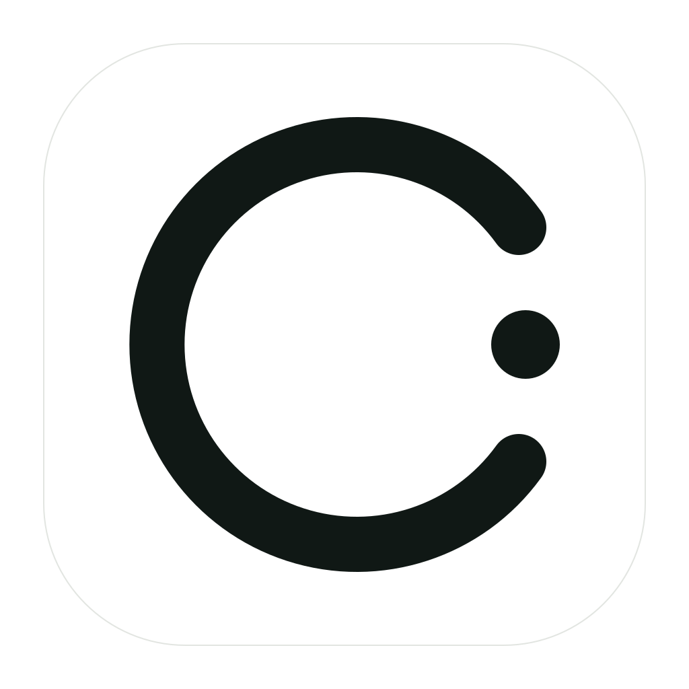

Recommended
Quiet Trend
Best match for a menu bar utility: one readable line, one computed endpoint, very little noise.

A transparent, single-color trend glyph with a terminal cost dot. The mark avoids currency symbols and AI decoration so it can sit naturally beside a status bar amount.
Single-color source for macOS template tinting.
Six restrained directions generated from the same product idea.
Recommended
Best match for a menu bar utility: one readable line, one computed endpoint, very little noise.
More abstract and compact. Good if the icon should feel less chart-like.
Adds a faint baseline to imply steady monitoring without becoming a dashboard.
A very simple daily trend metaphor. Clear, but a little more generic.
A solid token form with the trend removed from it. More logo-like, less utility-like.
Two local agent sources resolving into one amount. Useful, but busier at tiny sizes.